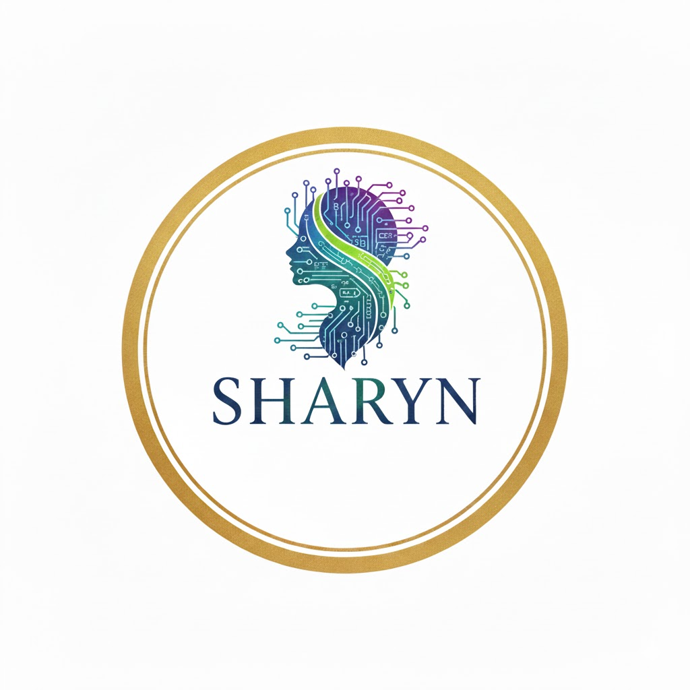

SHARYNCollaboration actuelle : Collaboratrice e-commerce chez Miels & Merveilles (avril 2026). Objectif : alternance en développement à partir de septembre.
Actuellement en 2ᵉ année de développement à l'IPI Toulouse, je viens d'obtenir une collaboration d'un mois chez Miels & Merveilles (e-commerce de miels artisanaux) à partir du 23 avril 2026. Je recherche également une alternance en développement à partir de septembre. Je suis disponible dès juin pour commencer en amont (stage, mission courte ou prise de poste anticipée).
Je suis particulièrement intéressée par des environnements où je peux : mettre en pratique mes compétences en HTML, CSS et JavaScript, participer à de vrais projets, et progresser sur de bonnes pratiques (qualité du code, accessibilité, tests, sécurité).
Télécharger mon CV Alternance (FR)I am a 2nd year IT student in Toulouse (development track) who just secured a 1-month collaboration at Miels & Merveilles (artisanal honey e-commerce) starting April 23, 2026. I am also looking for an apprenticeship in software development starting in September. I am available from June for an early start (internship, short mission or early onboarding).
I am motivated to join a team where I can contribute with my skills in HTML, CSS and JavaScript, learn good engineering practices, and grow as a developer on real-world projects.
Download my Apprenticeship CV (EN)